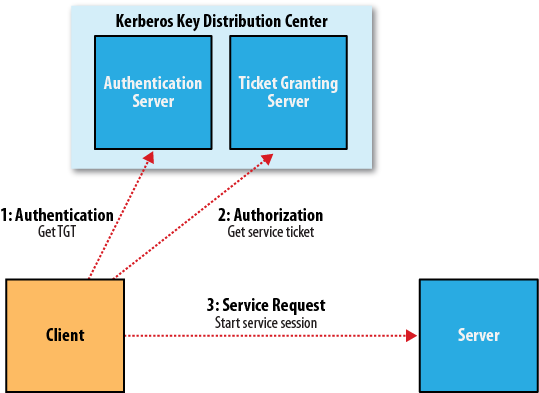

Setting up a Hadoop Cluster
当前日期: 02/25/2013 Mon
集群规范
-
使用商业硬件
- 不代表低端硬件，故障率太高，会带来很大的维护成本
- 不使用昂贵的硬件，性价比太低
-
关于RAID
- Namenode使用Raid1
-
Datanode可以使用Raid0提高磁盘效率，但一般不使用，而使用Hadoop自身的JBOD(Just a bunch of disks)
- RAID0 有木桶效应，受限于性能差的磁盘
- JBOD循环使用磁盘
- 一个测试中JBOD比RADID 0快30%
-
计算集群增长量
- 1 week = (3T/week*replicationNum)*1.3
- 30%用于中间文件和日志
网络拓扑

- 一般为两层架构
- 一个机架为30~40台机器，使用一个千兆交换机
- 各机架的交换机连接一个上层的千兆交换机（或更好）
- 机架内的node间通信要比机架间的好的多
机架配置: 对于多机架的集群，配置node的网络位置（和机架的映射关系），有助于极大的提升hadoop的效率
-
接口DNSToSwitchMapping用于解析node和网络位置的对应关系
public interface DNSToSwitchMapping { public List<String> resolve(List<String> names); //参数是ip列表 //返回值是代表网络位置的字符串 } -
属性
topology.node.switch.mapping.impl指定其要使用的实现类- 默认实现是ScriptBasedMapping,
- 它使用一个用户指定的脚本来决定映射关系
-
脚本通过属性
topology.script.file.name来指定
-
使用这部分信息的主要有两块
- Namenode用于优化分配Block
- Mapreduce尽量避免机架间传输（jobtracker)
集群的构建与安装
安装java环境
- >=jdk1.6 (推荐使用sun jdk)
创建Hadoop专用账号
- 创建hadoop专用用户，与其他服务隔离
-
对于小集群，通常会对用户主目录使用NTFS
- 实现ssh分布式
- 使用autofs, 按需要挂载
- autofs还提供挂载失败时的备用方案
安装Hadoop
- 将Hadoop安装在一个合理的地方
- 通常为/usr/local或/opt下
测试已安装的Hadoop
SSH配置
- Hadoop跨集群的控制脚本信赖于ssh
- 需要将集群中的机器配成无密码登录
Hadoop的配置
- 配置文件放在conf目录中
- 也可以放在Hadoop安装目录之外的目录中，但启动守护进程时，需要使用-config选项指定配置的位置
| Filename | Format | Description |
|---|---|---|
| hadoop-env.sh | Bash script | Environment variables that are used in the scripts to run Hadoop |
| core-site.xml | Hadoop configuration XML | Configuration settings for Hadoop Core, such as I/O settings that are common to HDFS and MapReduce |
| hdfs-site.xml | Hadoop configuration XML | Configuration settings for HDFS daemons: the namenode, the secondary namenode, and the datanodes |
| mapred-site.xml | Hadoop configuration XML | Configuration settings for MapReduce daemons: the jobtracker, and the tasktrackers |
| masters | Plain text | A list of machines (one per line) that each run a secondary namenode |
| slaves | Plain text | A list of machines (one per line) that each run a datanode and a task-tracker |
| hadoop-metrics .properties | Java Properties | Properties for controlling how metrics are published in Hadoop |
| log4j.properties | Java Properties | Properties for system logfiles, the namenode audit log, and the task log for the tasktracker child process |
配置管理
- Hadoop集群没有统一的配置信息
- 而是集群中的每个结点拥有自己的一组配置信息
- 需要系统管理员来保证配置文件之间的同步
-
当然Hadoop也被设计成整个集群使用一套配置文件,但也有不适用的地方：
- 集群中机器结点配置不一样时
- 可以分机器类
控制脚本:
- Hadoop提供了控制脚本用于启动或关闭整个集群中的守护进程
- 需要告诉Hadoop集群中包含哪些机器
- 两个配置文件存储了这部分信息，每一行存储一个hostname和一个ip address
-
masters
- 用于记录运行第二namenode的所有机器
-
slaves
- 用于记录所有运行datanode和tasktracker的机器
- 这两个文件放在配置目录中
- 但slaves的位置可在在hadoop.env通过HADOOP_SLAVES另行指定
- 这些配置文件无需分发到各工作结点上
- 它们只会被运行控制脚本的namenode使用
-
start-dfs.sh, 用于启动集群中所有 HDFS的守护进程，并在运行脚本的机器上启动一个namenode
- Starts a namenode on the local machine (the machine that the script is run on)
- Starts a datanode on each machine listed in the slaves file
- Starts a secondary namenode on each machine listed in the masters file
-
start-mapred.sh, 用于启动集群中所有 MapReduce的守护进程
- Starts a jobtracker on the local machine
- Starts a tasktracker on each machine listed in the slaves file
- MapReduce的控制脚本并不会使用masters配置文件
- 最终是通过hadoop-daemon.sh这个脚本完成工作的
主要结点:
- 主要结点的守护进程：namenode, secondary namenode, jobtracker
- 这些守护进程可以运行于一台机器上，集群较小时
- 但随着机器的增大，应该运行于不同的机器上
-
不管是否在一台机器上，它的运行遵循下列规则
- Run the HDFS control scripts from the namenode machine. The masters file should contain the address of the secondary namenode.
- Run the MapReduce control scripts from the jobtracker machine
- 当namenode与jobtracker运行于不同的机器上时，它们的slaves配置文件应该保持同步
环境变量设置
内存
-
默认为每个守护进程分配1G内存, 通过
hadoop-env.sh中的变量HADOOP_HEAPSIZE控制 -
工作结点内存大小的结点需要考虑到map task和reduce task的，因为这些task是在独立jvm里运行的
- 一个结点，最多的map task: mapred.tasktracker.map.tasks.maximum, 默认为2
- 一个结点，最多的reduce task: mapred.tasktracker.reduce.tasks.maximum, 默认为2
- 一个task的内存：mapred.child.java.opts, 默认为200m
- 工作结点内存 = datanode + tasktracker + maptasks + reducetasks = 1G + 1G + 200m*2 + 200m*2 = 2.8G
- 经验之谈：task总数与cpu数目之比的1与2之间
- 计算内存，最后不要忘记机器上其他不属于hadoop进程的内存
- 主结点内存，若运行namenode, secondary namenode, jobtracker, 默认需要3G内存
-
计算namenode 进程的内存
- namenode内存的大小依赖于集群中文件的总数和块数
- 默认1G内存，一般足够几百万文件使用了
- 保守使用，通常认为1G内存可用于一百万个文件块分配
- namenode 进程内存 = ( diskSize*datanodeNumber/blockSize/replicationNumber/100000 ) G
-
在
hadoop-env.sh中的可以专门设置namenode内存的大小：HADOOP_NAMENODE_OPTS -
在
hadoop-env.sh中的可以专门设置sceondary namenode内存的大小：HADOOP_SECONDARYNAMENODE_OPTS, 应该和namenode保持一致
-
在
hadoop-env.sh中也可以为其他守护进程设置内存大小
Java
-
hadoop使用
hadoop-env.sh的变量JAVA_HOME或系统环境变量JAVA_HOME来决定使用的jdk -
推荐在
hadoop-env.sh设置，可以使整个集群保持一致
系统日志
-
日志文件默认存放在
$HADOOP_INSTALL/logs下 -
可以通过
hadoop-env.sh的变量HADOOP_LOG_DIR修改 - 日志文件夹不存在，会自动创建， 但要注意创建权限
-
两类日志文件
- .log结尾，由log4j记录，每天rotate, 包含大部分的日志信息
- .out结尾，stdout和stderr的组成，每次重启rotate，最多五个，只有很少的日志内容
- 日志文件名 = 用户名-进程名-主机名.(log/out)
-
上面的用户名由
hadoop-env.sh中的HADOOP_IDENT_STRING指定
ssh配置
- 主结点的控制脚本可以通过ssh在所有工作结点上运行命令
- ConnetionTimeout: 调整合适的超时大小
- StrictHostKeyChecking: 不询问，自动添加远程主机known hosts
-
在
hadoop-env.sh中配置HADOOP_MASTER-
在工作结点守护进程启动时，会把以
HADOOP_MASTER为根的目录树与本地的HADOOP_INSTALL进行同步 -
大型集群为了防止启动时主结点rsync压力过大，可以设置
HADOOP_SLAVE_SLEEP单位为秒，会在调用工作结点两个指令间隙休眠一段时间
-
在工作结点守护进程启动时，会把以
守护进程的主要配置
主要的配置文件： core-site.xml hdfs-site.xml mapred-site.xml
HDFS
${hadoop.tmp.dir} 默认值： /tmp/hadoop-${user.name}
Table: Important HDFS daemon properties
| Property name | Type | Default value | Description |
| fs.default.name | URI | file:/// | The default filesystem. The URI defines the hostname and port that the namenode’s RPC server runs on. The default port is 8020. This property is set in coresite.xml. |
| dfs.name.dir | Comma-separated directory names | ${hadoop.tmp.dir}/dfs/name | The list of directories where the namenode stores its persistent metadata. The namenode stores a copy of the metadata in each directory in the list. |
| dfs.data.dir | Comma-separated directory names | ${hadoop.tmp.dir}/dfs/data | A list of directories where the datanode stores blocks. Each block is stored in only one of these directories. |
| fs.checkpoint.dir | Comma-separated directory names | ${hadoop.tmp.dir}/dfs/namesecondary | A list of directories where the secondary namenode stores checkpoints. It stores a copy of the checkpoint in each directory in the list. |
MapReduce
| Property name | Type | Default value | Description |
|---|---|---|---|
| mapred.job.tracker | Hostname and port | local | The hostname and port that the jobtracker’s RPC server runs on. If set to the default value of local, the jobtracker is run in-process on demand when you run a MapReduce job (you don’t need to start the jobtracker in this case, and in fact you will get an error if you try to start it in this mode). |
| mapred.local.dir | Comma-separated directory names | ${hadoop.tmp.dir}/mapred/local | A list of directories where MapReduce stores intermediate data for jobs. The data is cleared out when the job ends. |
| mapred.system.dir | URI | ${hadoop.tmp.dir}/mapred/system | The directory relative to fs.default.name where shared files are stored during a job run. |
| mapred.tasktracker.map.tasks.maximum | int | 2 | The number of map tasks that may be run on a tasktracker at any one time. |
| mapred.tasktracker. reduce.tasks.maximum | int | 2 | The number of reduce tasks that may be run on a tasktracker at any one time. |
| mapred.child.java.opts | String | -Xmx200m | The JVM options used to launch the tasktracker child process that runs map and reduce tasks. This property can be set on a per-job basis, which can be useful for setting JVM properties for debugging, for example. |
| mapreduce.map.java.opts | String | -Xmx200m | The JVM options used for the child process that runs map tasks. (Not available in 1.x.) |
| mapreduce.reduce.java.opts | String | -Xmx200m | The JVM options used for the child process that runs reduce tasks. (Not available in 1.x.) |
Hadoop守护进程与端口
- 守护进程运行一个RPC Server, 供守护进程间通信
- 守护进程运行一个HTTP Server, 提供界面供人为查看
- Server的端口号设为 0， 意谓着例使用一个空闲端口。
-
datanode除RPC Server外，还会运行一个TCP/IP Server
- 用于block传输
- 通过属性fs.datanode.addrss设置
- 默认值：0.0.0.0:50010
-
通过下列属性可以设置datanode和tasktracker使用的网口，同时会影响RPC Server和Http Server
- dfs.datanode.dns.interface
- mapred.tasktracker.dns.interface
Table 9-5. RPC server properties:
| Property name | Default value | Description |
|---|---|---|
| fs.default.name | file:/// | When set to an HDFS URI, this property determines the namenode’s RPC server address and port. The default port is 8020 if not specified. |
| dfs.datanode.ipc.address | 0.0.0.0:50020 | The datanode’s RPC server address and port. mapred.job.tracker local When set to a hostname and port, this property specifies the jobtracker’s RPC server address and port. A commonly used port is 8021. |
| mapred.task.tracker.report.address | 127.0.0.1:0 | The tasktracker’s RPC server address and port. This is used by the tasktracker’s child JVM to communicate with the tasktracker. Using any free port is acceptable in this case, as the server only binds to the loopback address. You should change this setting only if the machine has no loopback address. |
Table 9-6. HTTP server properties:
| Property name | Default value | Description |
|---|---|---|
| mapred.job.tracker.http.address | 0.0.0.0:50030 | The jobtracker’s HTTP server address and port |
| mapred.task.tracker.http.address | 0.0.0.0:50060 | The tasktracker’s HTTP server address and port |
| dfs.http.address | 0.0.0.0:50070 | The namenode’s HTTP server address and port |
| dfs.datanode.http.address | 0.0.0.0:50075 | The datanode’s HTTP server address and port |
| dfs.secondary.http.address | 0.0.0.0:50090 | The secondary namenode’s HTTP server address and port |
其他Hadoop的配置
集群成员
- dfs.hosts: 加入集群中将作为datanode的机器列表
- mapred.hosts: 加入集群中将作为tasktracker的机器列表
- dfs.hosts.exclude: 要从datanode中移除的机器
- mapred.hosts.exclude: 要从tasktracker中移除的机器
缓冲区大小
- io.file.buffer.size: i/o缓冲区大小，默认值 4KB, 可更改，比如128KB
HDFS block大小
- dfs.block.size: HDFS块大小，默认值 64KB, 可更改，比如128MB 256MB
保留空间
- dfs.datanode.du.reserved: HDFS块大小，默认值 0, 不保留 , 单位为bytes
回收站
- 通过fa.trash.interval设置保留时间,单位为钟，默认为0， 不保留，立刻删除
- shell中直接使用
- 编程需要特殊 api
Reduce慢启动
- 默认情况下，调度器会等待一个job至少%5map task完成，才会启动reduce task
- 但即使taskreduce不启动，仍就占着一个reduce slot
- mapred.reduce.slowstart.completed.maps: 设置等待时间，比如0.8，代表80%
Task内存限制
- 在一个集群中不能因为一个不好mapreduce任务，影响到整个集群
-
比如
mapred.child.java.opts设置过大-
有两种方式可避免这种方式
- 操作系统级的设置，使用命令ulimit 可直接修改文件 /etc/security/limits.conf
- hadoop中设置 mapred.child.ulimit,但必须比mapred.child.java.ops大，否则task可能起不来
-
有两种方式可避免这种方式
- 如果用户没有设置要使用的内存大小，则使用默认值：(mapred.job.map.memory.mb and mapred.job.reduce.memory.mb）
- task内存监控相关属性：
| Property name | Type | Default value | Description |
| mapred.cluster.map.memory.mb | int | -1 | The amount of virtual memory, in MB, that defines a map slot. Map tasks that require more than this amount of memory will use more than one map slot. |
| mapred.cluster.reduce.memory.mb | int | -1 | The amount of virtual memory, in MB, that defines a reduce slot. Reduce tasks that require more than this amount of memory will use more than one reduce slot. |
| mapred.job.map.memory.mb | int | -1 | The amount of virtual memory, in MB, that a map task requires to run. If a map task exceeds this limit, it may be terminated and marked as failed. |
| mapred.job.reduce.memory.mb | int | -1 | The amount of virtual memory, in MB, that a reduce task requires to run. If a reduce task exceeds this limit, it may be terminated and marked as failed. |
| mapred.cluster.max.map.memory.mb | int | -1 | The maximum limit that users can set mapred.job.map.memory.mb to. |
| mapred.cluster.max.reduce.memory.mb | int | -1 | The maximum limit that users can set mapred.job.reduce.memory.mb to. |
创建用户
-
创建用户
% hadoop fs -mkdir /user/username % hadoop fs -chown username:username /user/username -
数据限制
% hadoop dfsadmin -setSpaceQuota 1t /user/username
YARN配置
- 没有jobtracker和tasktracker
- resourcemanager：通常运行于namenode可独立的机器
- nodemanager: 运行于每个工作结点
-
start-yarn.sh:
- 用于启动集群中yarn的守护进程
- 会在脚本所在的机器启动一个resource manager
- 会在每个工作结点启动一个node manager, 结点列在配置文件slaves中
- yarn还有两个守护进程，一个用于查看历史job,一个用于查看正在运行的job
- yarn的配置文件
| Filename | Format | Description |
| yarn-env.sh | Bash script | Environment variables that are used in the scripts to run YARN |
| yarn-site.xml | Hadoop configuration XML | Configuration settings for YARN daemons: the resource manager, the job history server, the webapp proxy server, and the node managers |
YARN守护进程的重要配置
- mapred-site.xml仍然需要，用于通用的mapreduce配置
- 但takstracker 和 jobtracker相关的配置不再需要
| Property name | Type | Default value | Description |
| yarn.resourcemanager.address | Hostname and port | 0.0.0.0:8032 | The hostname and port that the resource manager’s RPC server runs on. |
| yarn.nodemanager.local-dirs | Comma-separated directory names | /tmp/nm-localdir | A list of directories where node managers allow containers to store intermediate data. The data is cleared out when the application ends. |
| yarn.nodemanager.aux-services | Comma-separated service names | A list of auxiliary services run by the node manager. A service is implemented by the class defined by the property | yarn.nodemanager.aux-services.service-name.class. By default, no auxiliary services are specified. |
| yarn.nodemanager.resource.memory-mb | int | 8192 | The amount of physical memory (in MB) that may be allocated to containers being run by the node manager. |
| yarn.nodemanager.vmem-pmemratio | float | 2.1 | The ratio of virtual to physical memory for containers. Virtual memory usage may exceed the allocation by this amount |
内存
- yarn并没有给task分配固定的运行槽，所以每个node运行task数量并不固定
- 而是task向nodemanager申请要使用的内存
- nodemanager从一个内存池中分配内存
- 所一个node所运行task的数目，依赖于它们总共申请的内存大小，不是一个固定数值
-
这样做可以有效的提升集群的利用率
- 比如在按槽分配中
- 需要运行一个map,但map槽没了，但还有reduce槽，这在mapreduce初期很正常
- 属性yarn.nodemanager.resource.memory-mb(default 8,192 MB.)用于指定参与containers分配的内存池大小
-
如何确定一个task所需内存的大小 ：
- mapred.child.java.opts, 设定运行map或reduce task的jvm堆的大小
- mapreduce.map.memory.mb (or mapreduce.reduce. memory.mb), 设定运行map或reduce task所需内存的大小
-
为分配内存指定一个最小值和一个最大值
- yarn.scheduler.capacity.minimum-allocation-mb, 最小值的默认值1024M
- yarn.scheduler.capacity.maximum-allocation-mb, 最大值的默认值10240M
-
虚拟内存大小限制
- yarn.nodemanager.vmem-pmem-ratio， 默认值 2.1
YARN的守护进程与端口
- RPC Servers:
| Property name | Default value | Description |
| yarn.resourcemanager.address | 0.0.0.0:8032 | The resource manager’s RPC server address and port. This is used by the client (typically outside the cluster) to communicate with the resource manager. |
| yarn.resourcemanager.admin.address | 0.0.0.0:8033 | The resource manager’s admin RPC server address and port. This is used by the admin client (invoked with yarn rmadmin, typically run outside the cluster) to communicate with the resource manager. |
| yarn.resourcemanager.scheduler.address | 0.0.0.0:8030 | The resource manager scheduler’s RPC server address and port. This is used by (in-cluster) application masters to communicate with the resource manager. |
| yarn.resourcemanager.resourcetracker.address | 0.0.0.0:8031 | The resource manager resource tracker’s RPC server address and port. This is used by the (in-cluster) node managers to communicate with the resource manager. |
| yarn.nodemanager.address | 0.0.0.0:0 | The node manager’s RPC server address and port. This is used by (in-cluster) application masters to communicate with node managers. |
| yarn.nodemanager.localizer.address | 0.0.0.0:8040 | The node manager localizer’s RPC server address and port. |
| mapreduce.jobhistory.address | 0.0.0.0:10020 | The job history server’s RPC server address and port. This is used by the client (typically outside the cluster) to query job history. This property is set in mapred-site.xml. |
- HTTP Servers:
| Property name | Default value | Description |
| yarn.resourcemanager.webapp.address | 0.0.0.0:8088 | The resource manager’s HTTP server address and port. |
| yarn.nodemanager.webapp.address | 0.0.0.0:8042 | The node manager’s HTTP server address and port. yarn.web-proxy.address The web app proxy server’s HTTP server address and port. If not set (the default), then the web app proxy server will run in the resource manager process |
| mapreduce.jobhistory.webapp.address | 0.0.0.0:19888 | The job history server’s HTTP server address and port. This property is set in mapred-site.xml. |
| mapreduce.shuffle.port | 8080 | The shuffle handler’s HTTP port number. This is used for serving map outputs, and is not a user-accessible web UI. This property is set in mapred-site.xml |
安全
- 早期的Hadoop假设自身运行于一个安全的可信任的环境
- 它的权限设计用于防止误操作丢失数据，而不是用于认证访问
- 比如一个用户可以假装root进行操作
- hadoop缺失就是一个认证机制，来保证用户就是他声称的角色
- HDFS的系统权限实现的是授权，一个用户角色可以做哪些操作
解决方案：
- kerberos提供认证，但不管权限
- HDFS提供授权
kerberos与hadoop
使用kerberos时，在用户使用一个service前，必须经过三个步骤，每个步骤包含一个与server交换信息的操作：
- Authentication. The client authenticates itself to the Authentication Server and receives a timestamped Ticket-Granting Ticket (TGT).
- Authorization. The client uses the TGT to request a service ticket from the Ticket Granting Server.
- Service request. The client uses the service ticket to authenticate itself to the server that is providing the service the client is using. In the case of Hadoop, this might be the namenode or the jobtracker.

© 2012 王兴朝